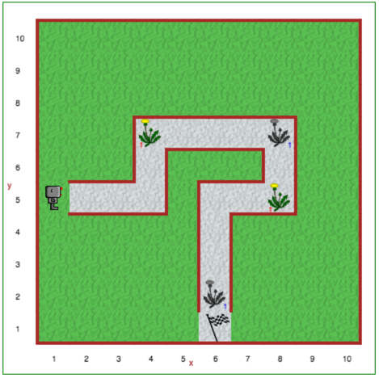

Svarbu
Kompiuterių programas rašykite taip, kad jas būtų lengva skaityti ir suprasti paprastiems žmonėms.
Rašydami programas, turėtumėte jas rašyti taip, kad kitiems žmonėms, kaip ir jums, būtų lengva jas skaityti ir jie galėtų suprasti, ką ką jos daro. Taip, kompiuterių kalbos sukurtos tam, kad galėtumėte bendrauti su kompiuteriais, panašiai kaip žmonių kalbos išsivystė tam, kad kad žmonės galėtų bendrauti vieni su kitais. Vis tik kompiuterių kalbomis parašytomis programomis programuotojai dalijasi tarpusavyje ir jiems svarbu jas greitai suprasti.
Komentarai - tai programuotojo pastabos, į kurias kompiuteris nekreipia dėmesio; jie skirti skaityti ir suprasti tik žmonėms. Jie leidžia programuotojams rašyti programas, kurias lengviau suprasti kitiems žmonėms.
Naudojant Pitono kalbą, komentarus galima rašyti dviem būdais:
# ženklą prieš komentarą bet kurioje eilutėje."""
... """ arba ''' ... '''.
Pirmiausia parašysiu paprastą programą be jokių komentarų, po to - antrą versiją su pridėtais komentarais ir trečią versiją... šiek tiek mažiau Tačiau visose trijose programose padarysiu tą pačią klaidą. Ar galite ją lengviau pastebėti pirmoje ar antroje programoje?
pirmyn() pirmyn() suktis_kairėn() padėti() pirmyn() pirmyn() suktis_kairėn() padėti() pirmyn() suktis_kairėn() padėti() pirmyn() pirmyn() suktis_kairėn() padėti()
Palyginkite pirmiau pateiktą programą su ta pačia programa iš Robotuko požiūrio taško, bet su pridėtomis pastabomis žmonėms; galėsite atpažinti komentarus, nes jie pateikiami laikantis jau minėtų taisyklių.
''' Čia yra paprastos programos pavyzdys, kurioje Robotukas piešia kvadratą, kiekviename kampe palikdamas daiktą. ''' pirmyn() # Pitono komandos rašomos atskirose eilutėse pirmyn() suktis_kairėn() # Robotukas moka suktis tik kairėn padėti() # priimame, kad Robotukas nešasi pakankamai daiktų # pakartojame dar 3 kartus, kad baigtume kvadratą pirmyn() pirmyn() suktis_kairėn() padėti() pirmyn() suktis_kairėn() padėti() pirmyn() pirmyn() suktis_kairėn() padėti()
Pateikti komentarai pastabos nėra itin geri, tačiau bent vienas iš jų turėjo padėti suprasti, kas programoje buvo negerai. Galite manyti, kad čia mūsų apgaulė; tačiau kartais gali būti sudėtinga suprasti kodą be komentarų? Komentarai, paaiškinantys ką tam tikras kodas turėtų daryti, gali būti labai naudingi ieškant klaidų.
Atkreipkite dėmesį, kad, be komentarų, kai kuriems "loginiams" kodo blokams atskirti naudojau tuščias eilutes, kad geriau matytųsi struktūra. Naudojant komentarus ir įterpiant tuščias eilutes galime padaryti programą lengviau skaitoma.
Atidarykite Robotuko aplinkos ketvirtą lygį.
Naudodamiesi iki šiol išmoktomis funkcijomis, priverskite Reeborgą eiti žvyrkeliu, rinkti kiaulpienes ir mesti jas į
patogiai įrengtas šiukšliadėžes (pavaizduotas pilkos spalvos kiaulpienių paveikslėliais). Naudokite funkciją pauzė,
kad Robotukas palauktų kiekvienoje vietoje, kurioje randa kiaulpienę, kurią gali nuskinti. Būtinai naudokite
komentarus ir tuščias eilutes, kad sprendimas būtų lengviau skaitomas!
Prisiminkite anksčiau aptartas funkcijas:
pirmyn()suktis_kairėn()paimti()padėti()pauzė()